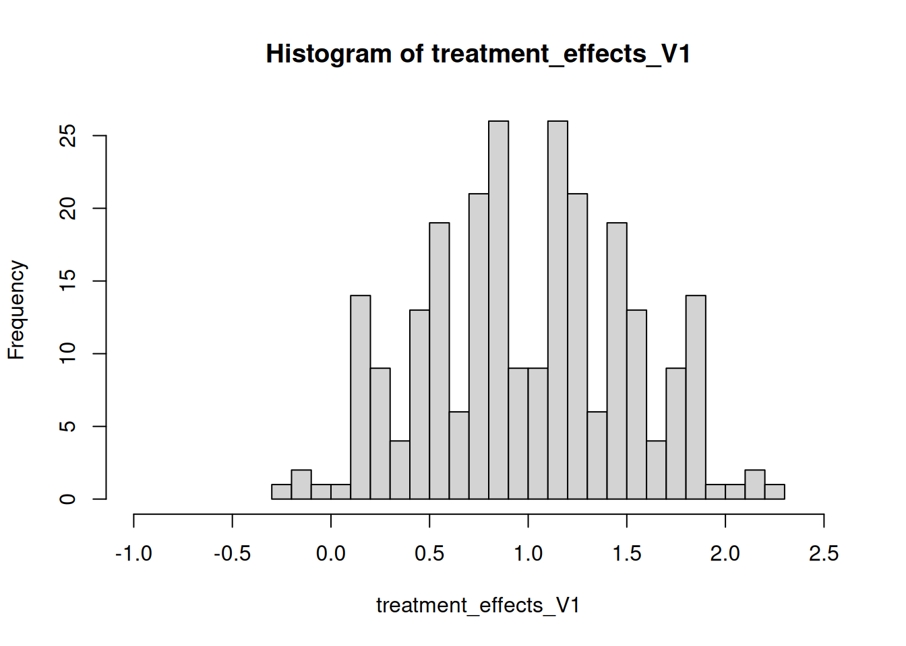
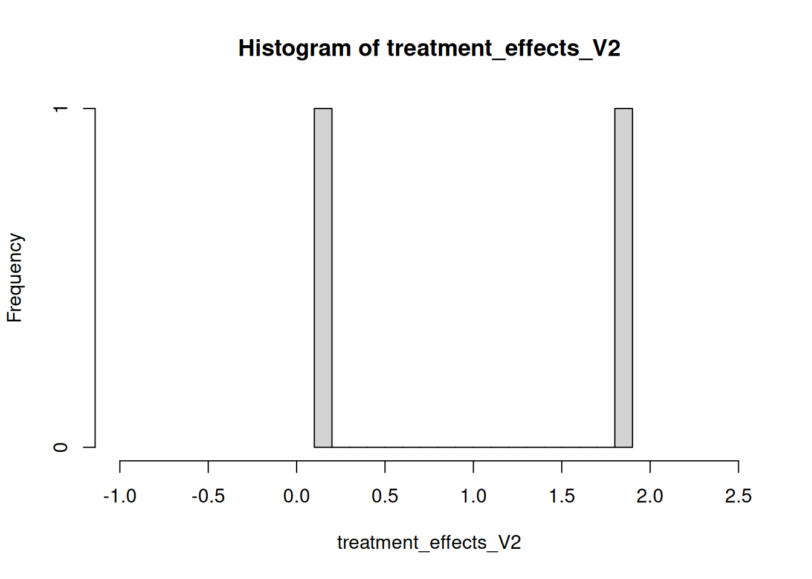
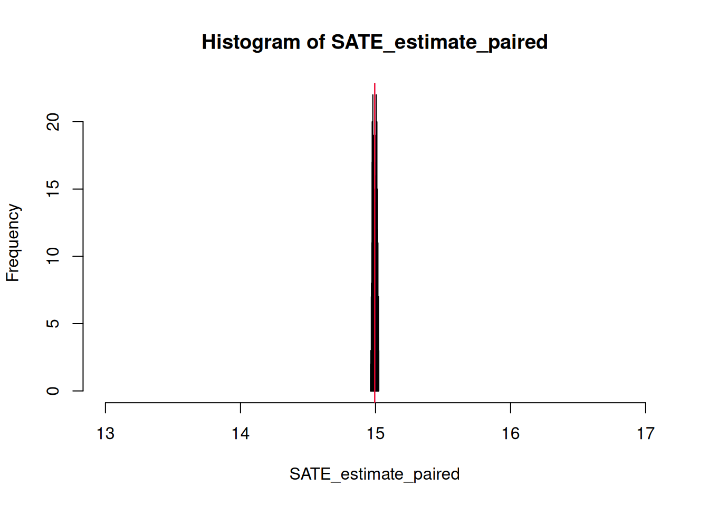
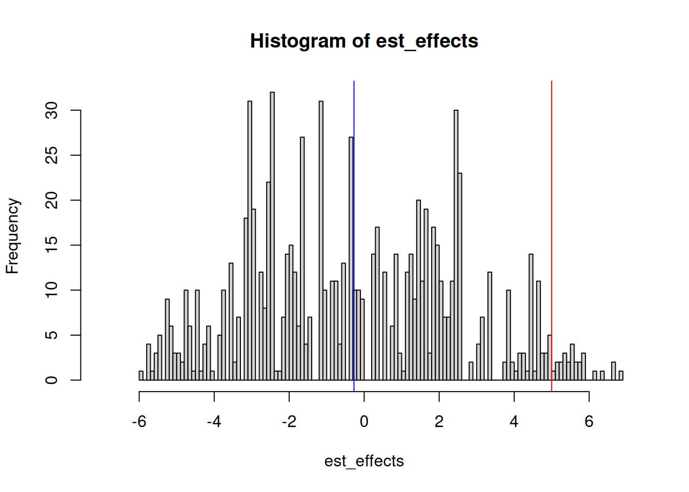
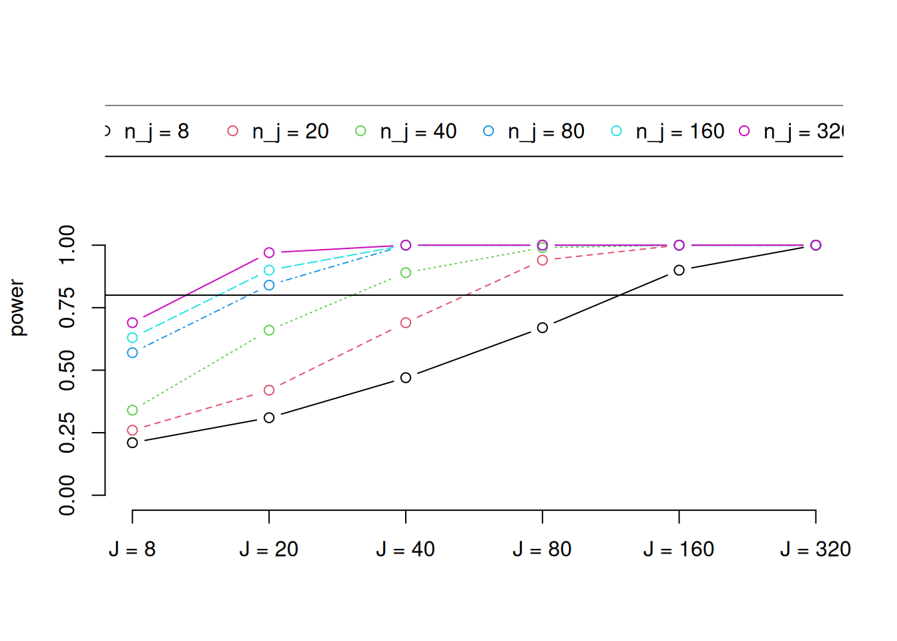
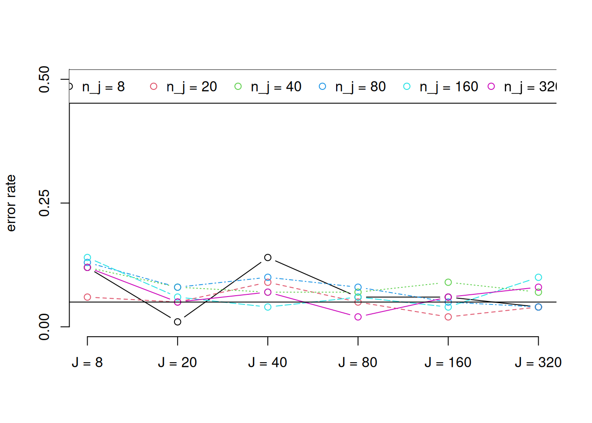
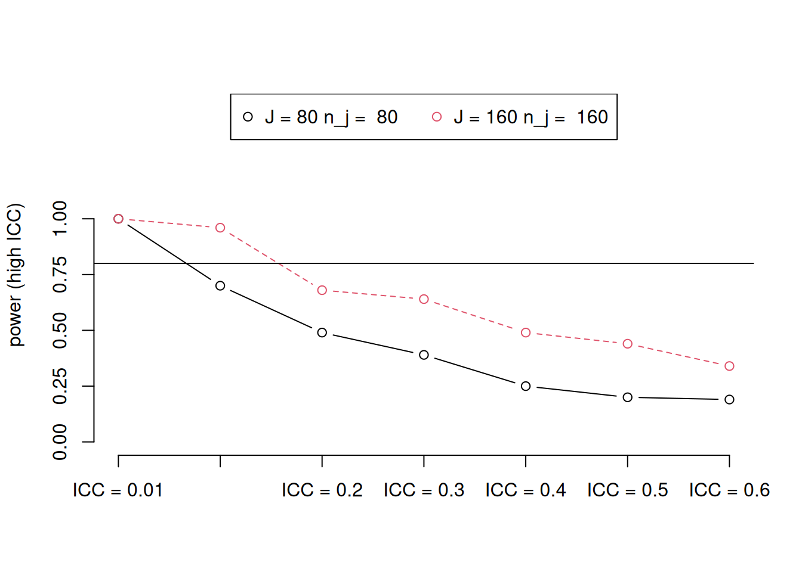
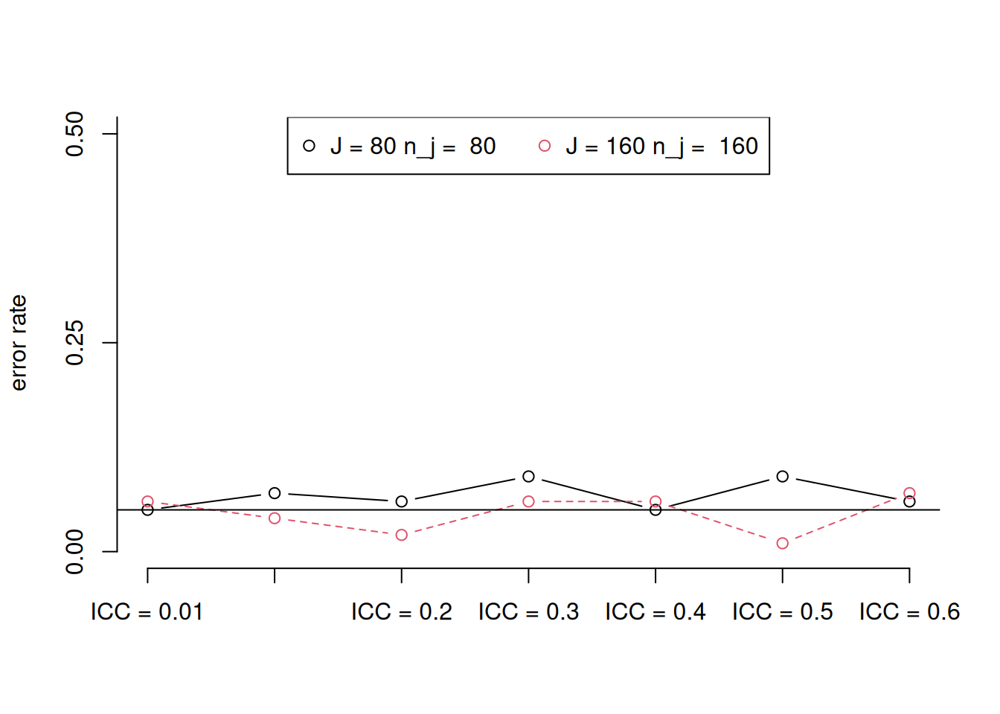

10 cosas que debe saber sobre la aleatorización por conglomerados
Summary
Los experimentos con aleatorización por conglomerados asignan tratamientos a grupos, pero miden los resultados a nivel de los individuos que componen los grupos. Esta divergencia entre el nivel al que se asigna la intervención y el nivel al que se definen los resultados plantea desafíos para la estimación y la inferencia. Esta guía cubre los temas clave: reducción de información por agrupamiento, sesgo por tamaños desiguales de conglomerados, efectos indirectos dentro de los conglomerados, análisis basado en el diseño vs. basado en modelos, análisis de poder y verificación del balance.
1 1 Lo que crear conglomerados significa
En los experimentos en que se aleatoriza por conglomerados (grupos) 1 el tratamiento se asigna a grupos enteros, pero las variables de resultado se miden a nivel de los individuos que componen los grupos. La divergencia entre el nivel en el que se asigna la intervención y el nivel en el que se miden los resultados lo que define un experimento con aleatorización por conglomerados.
Considere un estudio que asigna aldeas al azar para recibir diferentes programas de desarrollo, donde el bienestar de los hogares en la aldea es el resultado de interés. Este es un diseño por conglomerados ya que si bien el tratamiento se asigna a la aldea como un todo, nos interesan resultados que están definidos a nivel de los hogares. O considere un estudio que asigna ciertos hogares aleatoriamente para recibir diferentes mensajes que promueven el voto y donde lo que nos interesa saber es cómo se comportan las personas con respecto al voto. Debido a que el hogar es la unidad a la que se le asigna el mensaje, pero el resultado se define como comportamiento individual, este estudio supone aleatorización por conglomerados.
Considere ahora un estudio en el que se seleccionan aldeas al azar, se asignan a 10 personas de cada aldea al grupo de tratamiento o al de control, y medimos el bienestar de esas personas. En este caso, el estudio no supone una aleatorización por conglomerados, porque el nivel en el que se asigna el tratamiento y el nivel en el que se definen los resultados es el mismo. Supongamos que para un estudio se asignan al azar pueblos a diferentes programas de desarrollo y luego se mide la cohesión social en el pueblo. Aunque es el mismo procedimiento de aleatorización que en nuestro primer ejemplo, este no es un diseño con conglomerados porque las variables de resultado se miden a nivel de la aldea: el nivel de asignación al tratamiento y el nivel en el que se miden las variables de resultado es el mismo.
Hay dos razones principales por las que la aleatorización por conglomerados es importante. Por un lado, los conglomerados reducen la cantidad de información en un experimento porque restringe el número de formas en las que los grupos de tratamiento y control se pueden componer con respecto a la aleatorización a nivel individual. Si no se tiene en cuenta este hecho, a menudo podemos subestimar la varianza de nuestro estimador, lo que lleva a un exceso de confianza en los resultados de nuestro estudio. Por otro lado, los conglomerados nos hacen preguntarnos cómo combinar información de diferentes partes del mismo experimento en una sola cantidad. Especialmente cuando tenemos conglomerados de distintos tamaños y los resultados potenciales de las unidades dentro de estos grupos son muy diferentes entre sí, los estimadores convencionales producen sistemáticamente respuestas incorrectas debido al sesgo. Sin embargo, diferentes enfoques en las fases de diseño y análisis pueden ayudar a enfrentar los desafíos planteados por los diseños de aleatorización por conglomerados.
2 2 ¿Por qué la agrupación en conglomerados puede ser importante? La reducción de la información
Normalmente pensamos en la información contenida en los estudios en términos del tamaño de la muestra y las características de las unidades dentro del muestra. Sin embargo, dos estudios con exactamente el mismo tamaño de muestra y los mismos participantes podrían, en teoría, contener cantidades muy diferentes de información, dependiendo de si las unidades están agrupadas en conglomerados.
Esto afectará en gran medida la precisión de las inferencias que hacemos a partir de nuestros estudios.
Suponga que estamos haciendo una evaluación de impacto con 10 personas, donde 5 se asignan al grupo de tratamiento y 5 al control. En una versión del experimento, el tratamiento se asigna a los individuos: no hay conglomerados. En otra versión del experimento, los 5 individuos de pelo negro y los 5 individuos con algún otro color de pelo se asignan al tratamiento como grupo. Este diseño tiene dos grupos: ‘las personas de cabello negro’ y ‘las personas de cabello de otro color’. ’.
La simple aplicación de la regla de combinatoria para seleccionar k elementos de n” nos deja ver por qué es esto relevante. En la primera versión, la aleatorización permite 252 combinaciones diferentes de personas como grupos de tratamiento y control. Sin embargo, en la segunda versión, el procedimiento de aleatorización asigna a todos los sujetos de pelo negro al grupo de tratamiento o al de control, y por lo tanto sólo genera dos formas de combinar personas para estimar un efecto.
A lo largo de esta guía, ilustraremos diferentes puntos utilizando ejemplos escritos en código de R. Las y los lectores pueden copiar y pegar esto en su propio sesión de R para ver cómo funciona.
Code
set.seed(12345)# Definir el efecto promedio de tratamiento para la muestratreatment_effect <-1# Definir el indicador de individuos (i)person <-1:10# Definir el indicador de conglomerados (j)hair_color <-c(rep("black",5),rep("brown",5))# Definir la variable de resultado para control (Y0)outcome_if_untreated <-rnorm(n =10)# Definir la variable de resultado para el tratamiento (Y1)outcome_if_treated <- outcome_if_untreated + treatment_effect# Version 1 -Sin conglomerados#Genere todas las posibles asignaciones de tratamiento no agrupadas (Z)non_clustered_assignments <-combn(x =unique(person),m =5)# Estimar el efecto del tratamientotreatment_effects_V1 <-apply(X = non_clustered_assignments,MARGIN =2,FUN =function(assignment) { treated_outcomes <- outcome_if_treated[person %in% assignment] untreated_outcomes <- outcome_if_untreated[!person %in% assignment]mean(treated_outcomes) -mean(untreated_outcomes) } )# Estimar el error estándar realstandard_error_V1 <-sd(treatment_effects_V1)# Graficar el histograma de todos los estimados posible del efecto del tratamientohist(treatment_effects_V1,xlim =c(-1,2.5),breaks =20)

Code
# Version 2 - Cluster randomized# Genere todas las posibles asignaciones de tratamiento# al agrupar por color de cabello (Z)clustered_assignments <-combn(x =unique(hair_color),m =1)# Estimar el efecto del tratamientotreatment_effects_V2 <-sapply(X = clustered_assignments,FUN =function(assignment) { treated_outcomes <- outcome_if_treated[person %in% person[hair_color==assignment]] untreated_outcomes <- outcome_if_untreated[person %in% person[!hair_color==assignment]]mean(treated_outcomes) -mean(untreated_outcomes) } )# Estimar el error estándar realstandard_error_V2 <-sd(treatment_effects_V2)# Graficar el histograma de todos los estimados posible del efecto del tratamientohist(treatment_effects_V2,xlim =c(-1,2.5),breaks =20)

Como muestran los histogramas, los conglomerados proporcionan una visión más “gruesa”, menos granular de lo que podría ser el efecto del tratamiento. Independientemente del número de veces que se puede aleatorizar el tratamiento y del número de sujetos que se tenga, en un procedimiento de aleatorización por conglomerados, el número de posibles estimaciones del efecto del tratamiento serán estrictamente determinadas por el número de conglomerados asignados a las diferentes condiciones de tratamiento. Esto tiene implicancias importantes para el error estándar del estimador.
Code
# Comparar los errores estándarkable(round(data.frame(standard_error_V1,standard_error_V2),2))
standard_error_V1
standard_error_V2
0.52
1.13
Mientras que la distribución muestral para la estimación del efecto del tratamiento sin conglomerados tiene un error estándar de aproximadamente 0,52, el de la estimación con conglomerados es más del doble, 1,13. Recuerde que los datos que ingresan a ambos estudios son idénticos, la única diferencia entre los estudios reside en la forma en que el mecanismo de asignación de tratamiento revela la información.
Pensando en la información surge la pregunta de cuántas unidades de nuestro estudio varían dentro y entre grupos. Dos estudios aleatorizados por conglomerados con \(J = 10\) aldeas y \(n_j = 100\) personas por aldea pueden tener información diferente sobre el efecto del tratamiento en las personas si, en un estudio, las diferencias entre las aldeas son mucho mayores que las diferencias en las variables de resultado dentro de ellas. Si todos los individuos en las aldeas actuaran exactamente de la misma manera, pero las aldeas muestran resultados diferentes, entonces tendríamos del orden de 10 piezas de información: toda la información sobre los efectos causales en ese estudio estaría a nivel de la aldea. Alternativamente, si los individuos dentro de las aldeas actuaran de forma más o menos independientemente entre
Podemos formalizar la idea de que los conglomerados altamente homogéneos (donde las respuestas de los individuos dentro de los grupos son independientes) proporcionan menos información que los conglomerados altamente heterogéneos (donde las repuestas de los individuos dentro de los grupos son dependientes) con el coeficiente de correlación intra-clases (CCI, o ICC por sus siglas en inglés). Para una variable dada, \(y\), unidades \(i\) y conglomerados \(j\), podemos escribir el coeficiente de correlación intra-clase de la siguiente manera:
\[ \text{CCI} \equiv \frac{\text{varianza entre conglomerados en } y}{\text{varianza total en } y} \equiv \frac{\sigma_j^2}{\sigma_j^2 + \sigma_i^2} \]
donde \(\sigma_i^2\) es la varianza entre las unidades de la población y \(\sigma_j^2\) es la varianza entre los resultados definidos a nivel de conglomerado. Kish (1965) utiliza esta descripción de dependencia para definir la idea del “N efectivo” de un estudio (en el contexto de una encuesta por muestreo, donde las muestras pueden estar agrupadas en conglomerados):
\[\text{N}=\frac{N}{1+(n_j -1)\text{CCI}}=\frac{Jn}{1+(n-1)\text{CCI}},\] donde la segunda cantidad resulta de tener grupos con el mismo tamaño t (\(n_1 \ ldots n_J \equiv n\)).
Si 200 observaciones provenieran de 10 conglomerados con 20 individuos dentro de cada conglomerado y el CCI = .5, el 50% de la variación podría atribuirse a diferencias de conglomerado a conglomerado (y no a diferencias dentro de un conglomerado), la fórmula de Kish sugiere que tenemos un tamaño de muestra efectivo de aproximadamente 19 observaciones, en lugar de 200.
Como sugiere la discusión anterior, los conglomerados reducen más la información cuando a) restringen en gran medida el número de formas en que se puede estimar un efecto, y b) producen unidades cuyas resultados a nivel individual están estrechamente relacionados con el grupo del que son miembros (es decir, cuando aumenta el CCI).
3 3 Qué hacer con la reducción de información
Para caracterizar nuestra incertidumbre sobre los efectos del tratamiento, calculamos el error estándar: una estimación de cuánto habría variado el efecto del tratamiento si pudiéramos repetir el experimento muchas veces y observar las unidades alternar entre tratados y no tratados.
Sin embargo, no podemos observar el error estándar real de un estimador, y por lo tanto debemos utilizar procedimientos estadísticos para inferir esta cantidad. Los métodos convencionales para el cálculo de errores estándar no tienen en cuenta los conglomerados, que, como como ya señalamos puede aumentar considerablemente la variación en la cantidad estimada entre una repetición del experimento a otra. Por lo tanto, para evitar un exceso de confianza en los resultados experimentales, es importante tener en cuenta los conglomerados
En esta sección limitamos nuestra atención a los enfoques basado en el diseño. En este tipo de diseños simulamos repeticiones del experimento para derivar y comprobar formas de caracterizar la varianza de la estimación del efecto del tratamiento, teniendo en cuenta la aleatorización por conglomerados. Más adelante compararemos estos diseños con “diseños basados en modelos”. En el enfoque basado en modelos, los resultados se generan según un modelo de probabilidad y que las relaciones a nivel de conglomerados también siguen un modelo de probabilidad.
Para comenzar, creamos una función que simule un experimento aleatorio por conglomerados con correlación intra-clases fija y lo utilizamos para simular datos de un diseño simple aleatorizado por conglomerados.
Code
make_clustered_data <-function(J =10, n =100, treatment_effect = .25, ICC = .1){## Basado en Mathieu et al, 2012, Journal of Applied Psychologyif (J %%2!=0| n %%2!=0) {stop(paste("Number of clusters (J) and size of clusters (n) must be even.")) } Y0_j <-rnorm(J,0,sd = (1+ treatment_effect) ^2*sqrt(ICC)) fake_data <-expand.grid(i =1:n,j =1:J) fake_data$Y0 <-rnorm(n * J,0,sd = (1+ treatment_effect) ^2*sqrt(1- ICC)) + Y0_j[fake_data$j] fake_data$Y1 <-with(fake_data,mean(Y0) + treatment_effect + (Y0 -mean(Y0)) * (2/3)) fake_data$Z <-ifelse(fake_data$j %in%sample(1:J,J /2) ==TRUE, 1, 0) fake_data$Y <-with(fake_data, Z * Y1 + (1- Z) * Y0)return(fake_data)}set.seed(12345)pretend_data <-make_clustered_data(J =10,n =100,treatment_effect = .25,ICC = .1)
Debido a que nosotros hemos creado los datos, podemos calcular el verdadero error estándar de nuestro estimador. En primer lugar, generamos la verdadera distribución muestral simulando todas las posibles permutaciones del tratamiento y calculando nuestro estimador en cada iteración. La desviación estándar de esta distribución es el error estándar del estimador.
Code
# Defina el número de conglomeradosJ <-length(unique(pretend_data$j))# Genere todas las posibles formas de combinar conglomerados# dentro del grupo de tratamientoall_treatment_groups <-with(pretend_data,combn(x =1:J,m = J/2))# Cree una función para estimar los efectosclustered_ATE <-function(j,Y1,Y0,treated_clusters) { Z_sim <- (j %in% treated_clusters)*1 Y <- Z_sim * Y1 + (1- Z_sim) * Y0 estimate <-mean(Y[Z_sim ==1]) -mean(Y[Z_sim ==0])return(estimate)}set.seed(12345)# Evalúe la función para todas las asignaciones al tratamiento posiblecluster_results <-apply(X = all_treatment_groups,MARGIN =2,FUN = clustered_ATE,j = pretend_data$j,Y1 = pretend_data$Y1,Y0 = pretend_data$Y0)true_SE <-sd(cluster_results)true_SE
[1] 0.2567029
Esto produce un error estándar de 0.26. Podemos comparar el verdadero error estándar con otros dos tipos de error estándar que se emplean comúnmente. El primero ignora los conglomerados y asume que la distribución muestral del error estándar es idéntica e independiente de acuerdo a una distribución normal. Nos referiremos a esto como el error estándar IID Para tener en cuenta la agrupación por conglomerados, podemos utilizar la siguiente fórmula para el error estándar:
\[\text{Var}_\text{clustered}(\hat{\tau})=\frac{\sigma^2}{\sum_{j=1}^J \sum_{i=1}^{n_j}(Z_{ij}-\bar{Z})^2} (1-(n-1) \rho)\] donde \(\sigma^2 = \sum_{j = 1}^J\sum_{i = 1}^{n_j}(Y_{ij}-\bar{Y}_{ij})^2\) (siguiendo a Arceneaux y Nickerson (2009)). Este ajuste al error estándar de IID se conoce comúnmente como el “error estándar robusto para conglomerados” (EERC).
Cuando ignoramos la asignación por conglomerados, el error estándar será demasiado pequeño: estaríamos siendo demasiados confiados acerca de la cantidad de información que nos proporciona el experimento. En este caso, el EERC es un poco más conservador que el verdadero error estándar, pero se acerca al valor real. La discrepancia se debe probablemente a que el EERC no es una buena aproximación del verdadero error estándar cuando el número de conglomerados es tan pequeño como en este caso. Para ilustrar mejor el punto, podemos comparar una simulación del verdadero error estándar generado a partir de permutaciones aleatorias del tratamiento con el erros estándar IID y el de conglomerados (EERC).
Como ilustran estos ejemplos, eL error estándar robusto para conglomerados (EERC) se acerca a la verdad (el error estándar simulado) a medida que el número de agrupaciones aumenta. Mientras tanto, el error estándar que ignora los conglomerados (asumiendo IID) tiende a ser menor que cualquiera de los otros errores estándar. Cuanto menor es la estimación del error estándar, más precisas nos parecen las estimaciones y es más probable que encontremos resultados que parezcan “estadísticamente significativos”. Esto es problemático: en este caso, el error estándar de IID nos lleva a tener demasiada confianza en nuestros resultados porque ignora la correlación intra-clases, la medida en que las diferencias entre las unidades se pueden atribuir al conglomerados del que son miembros. Si estimamos errores estándar usando técnicas que subestiman nuestra incertidumbre, es más probable que rechacemos hipótesis nulas cuando no deberíamos.
Otra forma de abordar los problemas que implican los conglomerados en el cálculo de errores estándar es analizar los datos a nivel del conglomerados. En este enfoque, tomamos promedios o sumas de los resultados dentro de los conglomerados y luego tratamos el estudio como si solo tuviera lugar a nivel del conglomerado. Hansen y Bowers (2008) muestran que podemos caracterizar la distribución de la diferencia de medias usando lo que sabemos sobre la distribución de la suma del resultado en el grupo de tratamiento, que varía de una asignación de tratamiento a otra.
Code
# Agregar los datos que están al nivel de la unidad# al nivel del conglomerado# Sumar la variable de resultado al nivel del conglomeradoYj <-tapply(pretend_data$Y,pretend_data$j,sum)# Agregar el indicador del tratamiento al nivel del conglomeradoZj <-tapply(pretend_data$Z,pretend_data$j,unique)# Calcular el tamaño de cada conglomeradon_j <-unique(as.vector(table(pretend_data$j)))# Calcular el tamaño de la muestra (ahora nuestras unidades son conglomerados)N <-length(Zj)# Crear el identificador de los conglomeradosj <-1:N# Calcular el número de congliomerados tratadosJ_treated <-sum(Zj)# Cree una función para el estimador de diferencia de medias a nivel de conglomerado (consulte Hansen & Bowers 2008)cluster_difference <-function(Yj,Zj,n_j,J_treated,N){ ones <-rep(1, length(Zj)) ATE_estimate <-crossprod(Zj,Yj)*(N/(n_j*J_treated*(N-J_treated))) -crossprod(ones,Yj)/(n_j*(N-J_treated))return(ATE_estimate)}# Dados clústeres de igual tamaño y sin bloqueo, esto es idéntico a la# diferencia de medias a nivel de unidadATEs <-colMeans(data.frame(cluster_level_ATE =cluster_difference(Yj,Zj,n_j,J_treated,N),unit_level_ATE =with(pretend_data,mean(Y[Z==1])-mean(Y[Z==0]))))knitr::kable(data.frame(ATEs),align ="c")
ATEs
cluster_level_ATE
0.3417229
unit_level_ATE
0.3417229
Para caracterizar la incertidumbre sobre el efecto promedio del tratamiento a nivel del conglomerado, podemos explotar el hecho de que el único elemento aleatorio del estimador es ahora el producto cruzado entre el vector de asignación a nivel de conglomerado y la variable de resultado a nivel del conglomerado, \(\mathbf{Z}^\top\mathbf{Y}\), escalado por alguna constante. Podemos estimar la varianza de este componente aleatorio mediante una permutación del vector de asignación o mediante una aproximación de la varianza, asumiendo que la distribución muestral sigue una distribución normal.
Code
# Aproximación de la varianza utilizando supuestos de normalidadnormal_sampling_variance <- (N/(n_j*J_treated*(N-J_treated)))*(var(Yj)/n_j)# Aproximación de la varianza mediante permutacionesset.seed(12345)sampling_distribution <-replicate(10000,cluster_difference(Yj,sample(Zj),n_j,J_treated,N))ses <-data.frame(sampling_variance =c(sqrt(normal_sampling_variance),sd(sampling_distribution)),p_values =c(2*(1-pnorm(abs(ATEs[1])/sqrt(normal_sampling_variance),mean=0)),2*min(mean(sampling_distribution>=ATEs[1]),mean(sampling_distribution<=ATEs[1])) ))rownames(ses) <-c("Assumiendo normalidad","Permutaciones")knitr::kable(ses)
sampling_variance
p_values
Assumiendo normalidad
0.2848150
0.2302145
Permutaciones
0.2825801
0.2792000
Este enfoque a nivel de conglomerado tiene la ventaja de caracterizar correctamente la incertidumbre sobre los efectos cuando utilizamos aleatorización por conglomerados, sin tener que utilizar los errores estándar de EERC para las estimaciones a nivel de unidad, que son demasiado permisivas para N pequeños. De hecho, la tasa de falsos positivos de las pruebas basadas en errores estándar robustos para conglomerados tienden a ser incorrectas cuando el número de grupos es pequeño, lo que genera un exceso de confianza. Sin embargo, como veremos a continuación, cuando el número de conglomerados es muy pequeño (\(J = 4\)), el enfoque a nivel de conglomerado es demasiado conservador, rechazando la hipótesis nula con una probabilidad de 1. Otro inconveniente del enfoque a nivel de conglomerado es que no permite la estimación de cantidades de interés a nivel de unidad, como los efectos de tratamiento heterogéneos.
4 4 Razones por las que los conglomerados pueden ser importantes II: diferentes tamaños de conglomerados
Los conglomerados con diferentes tamaños pueden plantear un tipo específico de problemas relacionados con la estimación del efecto del tratamiento. Especialmente cuando el tamaño de un conglomerados está relacionado de alguna manera con los resultados potenciales de las unidades dentro de ella, muchos estimadores convencionales del efecto promedio del tratamientro para la muestra (EPTM) pueden estar sesgado.
Para aclarar las ideas: suponga que vamos hacer una intervención dirigida a empresas de diferentes tamaños; que busca incrementar la productividad de los trabajadores. Debido a las economías de escala, la productividad de los empleados en las grandes empresas aumenta proporcionalmente mucho más que la de los empleados de empresas más pequeñas. Suponga también que el experimento incluye 20 empresas con distintos tamaños, desde empresas unipersonales hasta grandes corporaciones con más de 500 empleados. La mitad de las empresas son asignadas al grupo de tratamiento y la otra la mitad está asignada al de control. Los resultados se definen a nivel de empleado.
Code
set.seed(1000)# Numero de firmasJ <-20# Empleados por firman_j <-rep(2^(0:(J/2-1)),rep(2,J/2))# Número total de empleadosN <-sum(n_j)# 2046# Identicador de empleadosi <-1:N# Identificador de firmas (conglomerados)j <-rep(1:length(n_j),n_j)# Efecto de tratamiento específico de las firmascluster_ATE <- n_j^2/10000# Productividad en ausencia tratamientoY0 <-rnorm(N)# Productividad con el tratamientoY1 <- Y0 + cluster_ATE[j]# Efecto promedio real del tratamiento para la muestra(true_SATE <-mean(Y1-Y0))
[1] 14.9943
Code
# Correlación entre el tamño de la firma y el tamaño del efectocor(n_j,cluster_ATE)
[1] 0.961843
Como podemos ver, existe una alta correlación en el efecto del tratamiento y el tamaño de los conglomerados Ahora simulemos 1000 análisis de este experimento, permutando el vector de asignación al tratamiento para cada análisis y tomando la diferencia no ponderada en las medias como una estimación del efecto de tratamiento promedio de la muestra.
Code
set.seed(1234)# Efecto promedio del tratamiento para la muestra (EPTM) sin ponderarSATE_estimate_no_weights <-NAfor(i in1:1000){# Asignación por conglomerados de la mitad de las firmas Z <- (j %in%sample(1:J,J/2))*1# Revela el valor de la variable de resultado Y <- Z*Y1 + (1-Z)*Y0# Estimar el EPTM SATE_estimate_no_weights[i] <-mean(Y[Z==1])-mean(Y[Z==0]) }# Generar un histograma de efectos estimadoshist(SATE_estimate_no_weights,xlim =c(true_SATE-2,true_SATE+2),breaks =100)# Agrega el valor esperado del estimado del EPTM usando este estimadorabline(v=mean(SATE_estimate_no_weights),col="blue")# Agrega el EPTM realabline(v=true_SATE,col="red")
El histograma muestra la distribución muestral del estimador, con el verdadero SATE en rojo y la estimación no ponderada del mismo en azul. El estimador es sesgado: en expectativa, no recuperamos el verdadero SATE, en cambio lo subestimamos. Intuitivamente, uno podría esperar correctamente que el problema esté relacionado con el peso relativo de los grupos en el cálculo del efecto del tratamiento. Sin embargo, en esta situación, tomar la diferencia en el promedio ponderado del resultado entre los grupos tratados y de control no es suficiente para proporcionar un estimador insesgado.
Code
set.seed(1234)# Promedios ponderados conglomeradosSATE_estimate_weighted <-NAfor(i in1:1000){# Definir los conglomerados que se van a tratar treated_clusters <-sample(1:J,J/2,replace = F)# Crear vector de asignación a nivel de la unidad Z <- (j %in% treated_clusters)*1# Revelar los valores de la variable de resultado Y <- Z*Y1 + (1-Z)*Y0# Calcular los pesos de los conglomerados treated_weights <- n_j[1:J%in%treated_clusters]/sum(n_j[1:J%in%treated_clusters]) control_weights <- n_j[!1:J%in%treated_clusters]/sum(n_j[!1:J%in%treated_clusters])# Calcule las medias de cada conglomerado treated_means <-tapply(Y,j,mean)[1:J%in%treated_clusters] control_means <-tapply(Y,j,mean)[!1:J%in%treated_clusters]# Calcule la estimación ponderada por conglomerados del SATE SATE_estimate_weighted[i] <-weighted.mean(treated_means,treated_weights) -weighted.mean(control_means,control_weights)}# Generar histograma de efectos estimadoshist(SATE_estimate_weighted, xlim =c (true_SATE-2, true_SATE +2), breaks =100)# Agregue la estimación esperada del SATE no ponderadoabline(v =mean (SATE_estimate_no_weights), col ="blue")# Agregue la estimación esperada del SATE ponderadoabline(v =mean (SATE_estimate_weighted), col ="green")# Y agregue el SATE realabline (v = true_SATE, col ="red")
El histograma muestra la distribución muestral del estimador ponderado, con el SATE real en rojo, la estimación no ponderada en azul y la ponderada en verde. En valor esperado, la versión ponderada del estimador es igual a la estimación del SATE no ponderado. ¿Cuál es la naturaleza del sesgo?
En lugar de asignar a la mitad de los conglomerados al tratamiento y comparar los resultados a nivel de los grupos de ‘tratamiento’ y ‘control’, suponga que creamos parejas de conglomerados, y solo a un conglomerado de cada par se le asigna el tratamiento. El efecto del tratamiento es entonces el agregado de las estimaciones a nivel de pares. Esto es análogo al procedimiento de asignación aleatoria completo empleado más arriba, en el que se asignaron al tratamiento \(J/2\) empresas. Ahora, en su lugar nos referiremos al \(k\)’ésimo de los pares de \(m\), donde \(2m = J\).
Dada esta configuración, Imai, King y Nall (2009) dan la siguiente definición formal del sesgo del estimador de diferencia de medias ponderado para conglomerados
donde \(l = 1,2\) indexa los grupos dentro de cada par. Por lo tanto, \(n_{1k}\) se refiere al número de unidades en el primero de los \(k\) pares de conglomerados
Esta expresión indica que el sesgo debido a tamaños diferentes en los conglomerados surge si y solo si se cumplen dos condiciones. En primer lugar, los tamaños de al menos un par de conglomerados deben ser desiguales: cuando \(n_{1k} = n_{2k}\) para todos los \(k\), el término de sesgo se reduce a 0. En segundo lugar, los tamaños del efecto ponderado de al menos un par de grupos deben ser desiguales: cuando \(\sum_{i = 1}^{n_ {1k}}(Y_ {i1k} (1) -Y_ {i1k}(0)) /n_{1k} = \sum_{i = 1}^{n_{2k}} (Y_{i2k} (1) -Y_{i2k} (0)) / n_{2k}\) para todos los \(k\), el sesgo también se reduce a 0.
5 5 Qué hacer cuando los conglomerados tienen diferentes tamaños
Como sugiere la expresión anterior, para reducir el sesgo causado por conglomerados con distintos tamaños a casi 0, es suficiente ubicar a los conglomerados en parejas del mismo tamaño o con resultados potenciales casi idénticos.
A continuación demostramos este enfoque utilizando los mismos datos que examinamos en el ejemplo de un experimento aleatorio hipotético de la productividad de los empleados de una empresa.
Code
set.seed(1234)# Crea una función que combine parejas según el tamañopair_sizes <-function(j,n_j){# Encuentra todos los tamaños únicos unique_sizes <-unique(n_j)# Encuentra la cantidad de tamaños únicos N_unique_sizes <-length(unique_sizes)# Genera una lista de candidatos para emparejar#para cada tamaño de conglomerados possible_pairs <-lapply(unique_sizes,function(size){which(n_j==size)})# Encuentra el número de todos los parejas posibles (m) m_pairs <-length(unlist(possible_pairs))/2# Asigna aleatoriamente unidades del mismo tamaño de conglomerados en parejas pair_indicator <-rep(1:m_pairs,rep(2,m_pairs))# Genera un vector con identificadores únicos a nivel de par pair_assignment <-unlist(lapply( possible_pairs,function(pair_list){sample(pair_indicator[unlist(possible_pairs)%in%pair_list])}))# Genera un vector que indique el pareja k'esima para cada i unidad pair_assignment <- pair_assignment[match(x = j,table =unlist(possible_pairs))]return(pair_assignment)}pair_indicator <-pair_sizes(j = j , n_j = n_j)SATE_estimate_paired <-NAfor(i in1:1000){# Ahora recorre el vector de asignaciones emparejadas pair_ATEs <-sapply(unique(pair_indicator),function(pair){# Para cada par, asigna uno al azar al tratamiento Z <- j[pair_indicator==pair] %in%sample(j[pair_indicator==pair],1)*1# Revela los resultados potenciales de la pareja Y <- Z*Y1[pair_indicator==pair] + (1-Z)*Y0[pair_indicator==pair] clust_weight <-length(j[pair_indicator==pair])/N clust_ATE <-mean(Y[Z==1])-mean(Y[Z==0])return(c(weight = clust_weight, ATE = clust_ATE)) }) SATE_estimate_paired[i] <-weighted.mean(x = pair_ATEs["ATE",],w = pair_ATEs["weight",])}# Genera histograma de efectos estimadoshist(SATE_estimate_paired,xlim =c(true_SATE-2,true_SATE+2),breaks =100)# Agrega la estimación esperada del SATE emparejadoabline(v=mean(SATE_estimate_paired),col="purple")# Y agrega el verdadero SATEabline(v=true_SATE,col="red")

Code
# El estimador por parejas está mucho más cerca de el valor real del SATEkable(round(data.frame(true_SATE = true_SATE,paired_SATE =mean(SATE_estimate_paired),weighted_SATE =mean(SATE_estimate_weighted),unweighted_SATE =mean(SATE_estimate_no_weights)),2))
true_SATE
paired_SATE
weighted_SATE
unweighted_SATE
14.99
14.99
13.45
13.45
A pesar de que los conglomerados tienen diferentes tamaños, el sesgo se elimina por completo con esta técnica: en valor esperado, el estimador de parejas recupera el efecto promedio real del tratamiento para la muestra, mientras que los estimadores de diferencia de medias ponderado y sin ponderar son sesgados.
Tenga en cuenta también que la varianza de la distribución muestral es mucho menor para el estimador de parejas, dando lugar a estimaciones mucho más precisas. Por lo tanto, crear parejas de conglomerados no solo ayuda a reducir el sesgo, sino que también puede mitigar en gran medida el problema de la reducción de la información inducida por los conglomerados.
Sin embargo, crear parejas de conglomerados previo a la aleatorización impone algunas limitaciones para el estudio, algunas de las cuales pueden ser difíciles de superar en la práctica. Por ejemplo, puede ser difícil o incluso imposible encontrar parejas que se adapten perfectamente a el tamaño de cada conglomerado, especialmente cuando hay varios tratamientos (de modo que, en lugar de parejas, el tratamiento se asigna a grupos de a tres o de cuatro). En tales casos, los investigadores pueden adoptar otras soluciones, como por ejemplo crear parejas haciendo coincidir las covariables observadas antes de la aleatorización, mediante la cual, por ejemplo, la similitud dentro del par de las covariables observadas se maximizan. Imai, King y Nall (2009) recomiendan un modelo mixto de estimación por parejas creadas posterior a la aleatorización, y detallan los supuestos requeridos para que las estimaciones sean válidas.
6 6 Por qué la agrupación en conglomerados puede ser importante III: efectos de derrame dentro de los conglomerados
En la mayoría de los experimentos estamos interesados en estimar el efecto promedio causal del tratamiento en una población o muestra. Sea \(Y_{z_i}\) la variable de resultado \(Y\) de la unidad \(i\) cuando se asigna al tratamiento \(z_i \in \{1,0\}\). Podemos definir esta cantidad, el efecto promedio del tratamiento, como el valor esperado de la diferencia entre la muestra cuando se asigna al tratamiento, \(Y_1\) y la muestra cuando asignado al grupo de control \(Y_0\): \(E[Y_1 - Y_0]\).
Sin embargo, puede darse el caso de que el resultado de una unidad dependa del tratamiento \(z_j\) al que otra unidad, \(j\), dentro del mismo conglomerado fue asignada. En ese caso, definimos los resultados potenciales \(Y_{z_j, z_i} \in \{Y_{00}, Y_{10}, Y_{01}, Y_{11}\}\), donde \(Y_{00}\) representa una unidad no tratada con un vecino no tratado, \(Y_{10}\) una unidad no tratada con un vecino tratado, \(Y_{01}\) una unidad no tratada con un vecino tratado y \(Y_{11}\) una unidad tratada con un vecino tratado.
Cuando llevamos a cabo una experimento aleatorizado por conglomerados, normalmente asumimos que el resultado de una unidad no es función del estado de tratamiento de las unidades del mismo conglomerado, o formalmente \(Y_{01} = Y_{11} = Y_1\) y \(Y_{10} = Y_{00} = Y_0\). Sin embargo, por diferentes de razones, puede que este no sea el caso: dependiendo de qué otras unidades estén asignadas al mismo conglomerado y si ese conglomerado se asigna al tratamiento, sus variables de resultado pueden ser muy diferentes.
Considere un experimento en el que cinco pares de estudiantes que viven en dormitorios son asignados al azar para recibir o no un subsidio de alimentos, y el bienestar reportado por ellos es la variable de interés. Supongamos que cuatro estudiantes son vegetarianos (V) y seis son comen carne (C). Cuando un pareja de VV, CC o VC es asignada al grupo de control, no recibe el subsidio y su bienestar no se ve afectado. Sin embargo, cuando se les asigna a tratamiento, las parejas VM discuten y esto reduce su bienestar, mientras que los pares VV y MM no discuten y son afectados únicamente por el tratamiento. \(x_k \in \{0,1 \}\) indica si la pareja coincide en preferencias, donde el resultado de la unidad denota \(Y_ {z_j, z_j, x_k}\). Esto implica que \(Y_ {110} = Y_1\) y \(Y_{000} = Y_{001} = Y_0\), mientras que \(Y_{111} \neq Y_1\). A continuación realizamos una simulación para entender por qué esto es importante.
Code
# Crea los datos experimentalesN <-10types <-c(rep("V",.4*N),rep("M",.6*N))ID <-1:length(types)baseline <-rnorm(length(ID))# El efecto real del tratamiento es 5true_ATE <-5# Si una pareja no coincide (VM, MV), reciben un efecto de derrame de -10spillover_or_not <-function(type_i,type_j){ifelse(type_i==type_j,yes =0,no =-10)}# Una función para crear parejasform_pairs <-function(ID,types){ N <-length(ID) k <-rep(1:(N/2),2) pair_place <-rep(c(1,2),c(N/2,N/2)) ID_draw <-sample(ID) type_i <- types[ID_draw] pair_1 <- type_i[pair_place==1] pair_2 <- type_i[pair_place==2] ID_j_1 <- ID_draw[pair_place==1] ID_j_2 <- ID_draw[pair_place==2] type_j <-c(pair_2,pair_1) j <-c(ID_j_2,ID_j_1)return(data.frame(i = ID_draw,j = j,k = k, type_i = type_i, type_j = type_j))}# Una función para asignar el tratamiento y revelar# el valor de las variables de resultadosassign_reveal_est <-function(k,i,effect,spillover){ Z <- (k %in%sample(k,N/2))*1 Y <- baseline[i] + Z*effect + Z*spillovermean(Y[Z==1])-mean(Y[Z==0])}# Una función para simular el experimentosimulate_exp <-function(){ data <-form_pairs(ID,types) spillover <-spillover_or_not(data$type_i,data$type_j) estimate <-assign_reveal_est(k = data$k,effect = true_ATE,spillover = spillover,i = data$i)return(estimate)}# Estima el efecto 1000 vecesest_effects <-replicate(n =1000,expr =simulate_exp())# Efecto promedio del tratamiento (ATE, por sus siglas en inglés)# Grafica los etimados como barras, el valor esperado del efecto promedio del tratamiento en azul y el valor real del ATE en rojohist(est_effects,breaks =100,xlim =c(-7,7))abline(v = true_ATE,col ="red")abline(v =mean(est_effects,na.rm = T),col ="blue")

Como muestra el gráfico anterior, este es un estimador sesgado del verdadero efecto de tratamiento a nivel individual, \(Y_{01} - Y_{00}\). En valor esperado, estimamos un efecto cercano a 0, obteniendo efectos muy negativos en casi la mitad de las simulaciones de este experimento. El punto clave aquí es que se cambia la estimación: en lugar del efecto promedio del tratamiento, obtenemos una combinación del efecto del tratamiento real entre aquellos que coinciden en preferencias (no experimentan efectos de derrame) \(E [Y_{110} -Y_{00x_k}]\) y el tratamiento combinado y el efecto de derrame para aquellos que no coinciden \(E[Y_{111} -Y_ {00x_k}]\). Sin embargo, lo más importante es que no podemos identificar el impacto del derrame, \(E[Y_{101} -Y_ {00x_k}]\), independientemente del efecto directo. Esto se debe a que la aleatorización es por conglomerados: no es posible observar \(Y_ {101}\) en un esquema aleatorio por conglomerados, porque todas las unidades dentro de un conglomerado siempre se tratan. En términos generales, este es un problema para cualquier estudio aleatorizado por conglomerados: para afirmar que identificamos el efecto del tratamiento a nivel individual, debemos asumir que \(Y_{11} = Y_{1}\) y $ Y_ {00} = Y_{0}$.
7 7 Lo que no se debe hacer para efectos de derrame dentro del conglomerado
Si hay razones de peso para creer que puede haber efectos de derrame intra-grupo, los investigadores pueden adoptar diferentes enfoques dependiendo de la forma en la que los conglomerados estén formados. Para algunos estudios, los investigadores deben clasificar las unidades en grupos para el experimento: por ejemplo, en un estudio de un programa vocacional, el investigador puede decidir quién se recluta a cada clase. En tales casos, si el investigador puede hacer supuestos plausibles sobre los efectos de derrame, el efecto del tratamiento a nivel individual se puede estimar.
Considere a un investigador que realiza el estudio anterior y que correctamente asumió que se producirían efectos de derrame entre parejas que no coinciden en preferencias. En este caso, el investigador puede recuperar el verdadero efecto del tratamiento individual formando grupos que no son susceptibles al derrame
En caso que los investigadores no puedan controlar cómo se forman los conglomerados, pueden investigar la heterogeneidad en los efectos del tratamiento a nivel del conglomerados como una forma de entender los posibles efectos de derrame. Sin embargo, en ambos casos, se deben hacer suposiciones sobre la naturaleza de los efectos de derrame. Estrictamente hablando, estos no pueden ser identificados causalmente debido a que los resultados \(Y_{01}\) y \(Y_ {10}\) no pueden ser observados. En última instancia, habría que combinar esquemas de aleatorización con y sin conglomerados estimar los efectos de derrame intra-grupo, \(Y_{11} - Y_{01}\) y \(Y_{01} - Y_{00}\). Por tanto, en aras de interpretar los resultados correctamente, los investigadores deben tener cuidado al definir su estimación para tener en cuenta la posibilidad de derrame intra-grupo.
8 8 Rendimiento de análisis basados en diseños frente a modelos de estudios con coglomerados
En nuestra discusión sobre la pérdida de información, evaluamos enfoques que requieren (1) que el tratamiento se asigne al azar según lo planeado y (2) que el tratamiento asignado a una unidad no cambie los resultados potenciales de ninguna otra unidad. En los casos en que se puedan estar violando estos supuestos, a veces es más sencillo especificar modelos estadísticos que intenten representar las características de diseños complejos. Incluso si no creemos que los modelos sean descripciones científicas de un proceso conocido, esta puede ser una forma más informativa y flexible de analizar un experimento que derivar nuevas expresiones complejas de estimadores basados en diseños.
En los enfoques basados en modelos, la distribución muestral de un estimador se aproxima utilizando distribuciones de probabilidad para caracterizar nuestra incertidumbre sobre cantidades desconocidas, como el efecto del tratamiento real o la media real de las variables de resultado a nivel del conglomerado. Estos enfoques se denominan “basados en modelos” porque describen relaciones causales que surgen de distribuciones de probabilidad interrelacionadas. A menudo, estos enfoques utilizan “modelos multinivel”, en los que se entiende que los parámetros desconocidos, como las diferencias entre los conglomerados, surgen de distribuciones de probabilidad. Así, por ejemplo, podría haber un modelo para resultados a nivel individual, cuya intersección y/o coeficientes varían de un grupo a otro. De esta manera, es posible modelar el ‘efecto de ser una unidad en el conglomerado A’, por separado de la estimación del efecto del tratamiento. La ventaja de estos enfoques es que permiten una “agrupación parcial” de la varianza de la población y la varianza entre conglomerados. En este caso, cuando un conglomerado determinado está mal estimado, contribuye con un menor peso a la estimación y viceversa. Por lo tanto, estos modelos a menudo funcionan bien en situaciones en las que hay muy pocos datos para algunos grupos. Mediante la especificación de una distribución posterior bayesiana, se puede aprovechar información proveniente de todas las partes del estudio. El problema es que los modelos con muchos supuestos solo son correctos en la medida en que los supuestos subyacentes sean correctos.
Aquí mostramos que el efecto estimado es el mismo si usamos una simple diferencia de medias (a través del MCO) o un modelo multinivel en nuestra configuración de ensayo aleatorio de conglomerados muy simplificada.
Los intervalos de confianza difieren a pesar de que las estimaciones son las mismas. Hay más de una forma de calcular los intervalos de confianza y las pruebas de hipótesis para modelos multinivel. El software en R (Bates, Maechler, Bolker, et al. (2014a), Bates, Maechler, Bolker, et al. (2014b)) incluye por defecto tres métodos. Gelman y Hill (2007) recomiendan el muestreo MCMC de la distribución posterior implícita. Aquí nos enfocamos en el método de Wald simplemente porque es el más rápido de calcular.
Code
# Esta función calcula los intervalos de confianza para modelos lineales# con matrices de varianza-covarianza personalizadasconfint_HC<-function (coefficients, df, level =0.95, vcov_mat, ...) { a <- (1- level)/2 a <-c(a, 1- a) fac <-qt(a, df) ses <-sqrt(diag(vcov_mat)) coefficients + ses %o% fac}simple_OLS_CI <-confint_HC(coefficients =coef(simple_OLS),vcov_mat =RCSE(model = simple_OLS,cluster = J_30_clusters$j,return_cov =TRUE),df = simple_OLS$df.residual)["Z",]multi_wald_CI <- lme4::confint.merMod( multilevel,parm ="Z",method ="Wald")["Z",]multi_profile_CI <- lme4::confint.merMod( multilevel,parm =4,method ="profile")["Z",]knitr::kable(round(rbind(Design_Based_CI = simple_OLS_CI,Model_Based_Wald_CI = multi_wald_CI,Model_Based_Profile_CI = multi_profile_CI),3))
2.5 %
97.5 %
Design_Based_CI
-0.416
0.156
Model_Based_Wald_CI
-0.421
0.161
Model_Based_Profile_CI
-0.420
0.161
Podemos calcular directamente una estimación del CCI a partir de las variables del modelo (la varianza de la distribución bayesiana normal previa (normal prior distribution) que representa las diferencias de grupo a grupo en la intersección sobre la varianza total de la distribución normal posterior).
Para evaluar el desempeño de este enfoque basado en modelos, en contraposición a los enfoques de error estándar robusto para conglomerados (EERC, o RCSE por sus siglas en inglés) y de agregado por conglomerado descritos anteriormente, podemos comprobar con qué frecuencia los diferentes enfoques rechazan falsamente la hipótesis nula de que el tratamiento no tiene efecto para ninguna unidad, cuando sabemos que la hipótesis nula es verdadera.
Para hacerlo, escribimos una función que, en primer lugar, desasocia la asignación del tratamiento y la variable de resultado sorteando aleatoriamente la asignación. Luego comprueba si 0 está en el intervalo de confianza del 95% para cada uno de los tres enfoques, tal como debería ser. Recuerde que las pruebas válidas tendrían tasas de error dentro de 2 errores estándar de simulación de .95; esto significaría que una hipótesis nula correcta no se rechazaría más del 5% de las veces.
Code
# Crea una función para verificar si 0 está en el intervalo de confianza de# los enfoques de estimación EERC (RCSE), agregados por conglomerados y multinivelsim_0_ate <-function(J,Y) {# Haga que la verdadera relación entre el tratamiento y los#resultados sea igual a sorteando Z pero sin revelar nuevos resultados potenciales z.sim <-sample(1:max(J), max(J) /2) Z_new <-ifelse(J %in% z.sim ==TRUE, 1, 0)# Estimar usando el modelo lineal para EERC linear_fit <-lm(Y ~ Z_new) linear_RCSE <-RCSE(model = linear_fit,cluster = J,return_cov =TRUE) linear_CI <-confint_HC(coefficients =coef(linear_fit),vcov_mat = linear_RCSE,df = linear_fit$df.residual)["Z_new",]# Comprueba si el intervalo de confianza contiene el 0 zero_in_CI_RCSE <- (0>= linear_CI[1]) & (0<= linear_CI[2])# Estima utilizando un enfoque agregado por conglomerados(Hansen y Bowers 2008) Yj <-tapply(Y, J, sum) Zj <-tapply(Z_new, J, mean) m0 <-unique(table(J)) n <-length(Zj) nt <-sum(Zj)# Realiza una prueba basada en Hansen y Bowers 2008 para diferencia de medias# con asignación a nivel de conglomerados (asumiendo conglomerados del mismo tamaño) ones <-rep(1, length(Yj)) dp <-crossprod(Zj,Yj) * (n / (m0 * nt * (n - nt))) -crossprod(ones,Yj) / (m0 * (n - nt)) obs_ATE <- dp[1,1]# Valor p de dos colas para la prueba la hipótesis nula que no hay efecto Vdp <- (n / (m0 * nt * (n - nt))) * (var(Yj) / m0) HB_pval <-2* (1-pnorm(abs(obs_ATE) /sqrt(Vdp)))# Comprueb si el valor p es mayor que .05 zero_not_rej_HB <- HB_pval >= .05# Estima usando un modelo multinivel multilevel_fit <-lmer(Y ~ Z_new + (1| J),control =lmerControl(optimizer ='bobyqa'),REML =FALSE) multilevel_CI <- lme4:::confint.merMod( multilevel_fit,parm ="Z_new",method ="Wald")# Comprueba si el intervalo de confianza contiene el 0 zero_in_CI_multilevel <- (0>= multilevel_CI[1]) & (0<= multilevel_CI[2])return(c(ATE =fixef(multilevel_fit)["Z_new"],zero_in_CI_RCSE = zero_in_CI_RCSE,zero_not_rej_HB = zero_not_rej_HB,zero_in_CI_multilevel = zero_in_CI_multilevel))}# Ahora calcula el valor de los estimadores simulando 1000 vecesJ_4_comparison <-replicate(1000, sim_0_ate(J = J_4_clusters$j, Y = J_4_clusters$Y))J_4_error_rates <-apply(J_4_comparison,1,mean)J_4_error_rates[-1] <-1-J_4_error_rates[-1]J_10_comparison <-replicate(1000, sim_0_ate(J = J_10_clusters$j, Y = J_10_clusters$Y))J_10_error_rates <-apply(J_10_comparison,1,mean)J_10_error_rates[-1] <-1-J_10_error_rates[-1]J_30_comparison <-replicate(1000, sim_0_ate(J = J_30_clusters$j, Y = J_30_clusters$Y))J_30_error_rates <-apply(J_30_comparison,1,mean)J_30_error_rates[-1] <-1-J_30_error_rates[-1]J_100_comparison <-replicate(1000, sim_0_ate(J = J_100_clusters$j, Y = J_100_clusters$Y))J_100_error_rates <-apply(J_100_comparison,1,mean)J_100_error_rates[-1] <-1-J_100_error_rates[-1]error_comparison <-data.frame(round(rbind( J_4_error_rates, J_10_error_rates, J_30_error_rates, J_100_error_rates),3))colnames(error_comparison) <-c("EPT estimado","MCO + EERC","Nivel conglomerados","Multi-nivel")kable(error_comparison,align ="c")
EPT estimado
MCO + EERC
Nivel conglomerados
Multi-nivel
J_4_error_rates
0.002
0.000
0.000
0.334
J_10_error_rates
0.005
0.101
0.042
0.101
J_30_error_rates
0.003
0.061
0.040
0.063
J_100_error_rates
-0.001
0.058
0.052
0.059
En nuestra configuración simple, los enfoques a nivel individual se comportan de la misma manera: ni el enfoque basado en diseños ni el basado en modelos producen inferencias estadísticas válidas cuando el número de conglomerados es menor que 30. Esto tiene sentido: ambos enfoques se basan en teoremas del límite central por lo que para que la ley de la normal pueda representar la distribución del estadístico de prueba bajo la hipótesis nula. El enfoque a nivel de conglomerados siempre es válido, pero a veces produce intervalos de confianza demasiado grandes (cuando el número de conglomerados es pequeño). Cuando el número de conglomerados es grande (digamos, 100), todos los enfoques son equivalentes en términos de sus tasas de error. Los diseños con pocos conglomerados deben considerar el enfoque a nivel de conglomerado utilizando la aproximación normal que se muestra aquí o incluso enfoques basados en permutación directa para hacer inferencia estadística.
9 9 Análisis de poder para diseños con conglomerados
Queremos diseños que hagan que sea probable rechazar hipótesis que no concuerden con los datos y poco probable rechazar hipótesis que concuerden con los datos. Hemos visto que los supuestos requeridos para la validez de las pruebas comunes (típicamente, un gran número de observaciones o grandes cantidades de información en general) son desafios para diseños con conglomerados, y las pruebas que dan cuenta de los conglomerados pueden ser inválidas si el número de los conglomerados es pequeño (o la información es escasa a nivel de conglomerados en general). También hemos visto que podemos producir pruebas estadísticas válidas para hipótesis sobre el efecto promedio del tratamiento usando errores estándar robustos para conglomerados (EERC), modelos multinivel o usando el enfoque a nivel de grupo descrito por Hansen y Bowers (2008), y que el emparejamiento puede minimizar drásticamente el sesgo en diseños con conglomerados de tamaños diferente.
La regla más importante con respecto al poder estadístico de los diseños con conglomerados es que más grupos pequeños son mejores que menos grupos con más unidades. Esto se puede demostrar mediante la simulación de experimentos. En términos generales, la forma más flexible de evaluar el poder de un diseño es a través de la simulación, ya que permite esquemas complejos de conglomerados y bloques, y además puede incorporar covariables. A continuación, usamos el estimador MCO con errores estándar robustos para conglomerados para ahorrar tiempo de cálculo, pero se puede lograr el mismo análisis utilizando cualquier estimador y estadístico de prueba.
Code
# Una función para probar la hipótesis nula y la hipótesis verdaderatest_H0_and_Htrue <-function(J = J,n = n,treatment_effect = treatment_effect,ICC = ICC) {# Crear datos: data <-make_clustered_data(J = J,n = n,treatment_effect = treatment_effect,ICC = ICC) linear_fit <-lm(Y ~ Z,data = data) RCSE_CI <-confint_HC(coefficients =coef(linear_fit),vcov_mat =RCSE(model = linear_fit,cluster = data$j,return_cov =TRUE),df = linear_fit$df.residual)["Z",]# El cero no debería estar en este CI muy a menudo ya que la hipótesis nula# de 0 es falsa en este caso correct_reject <-! ((0>= RCSE_CI [1]) & (0<= RCSE_CI [2]))# Prueba nula de taus verdadero (el primer intento es usar el verdadero,# el segundo es hacer que 0 sea el valor verdadero)# Reasignar el tratamiento a nivel de aldea para que Y sea independiente de Z# --- por lo que el efecto real sería 0 data$Z_new <-ifelse(data$j %in%sample(1:J, max(J)/2), 1, 0) linear_fit_true <-lm(Y ~ Z_new,data = data) RCSE_CI_true <-confint_HC(coefficients =coef(linear_fit_true),vcov_mat =RCSE(model = linear_fit_true,cluster = data$j,return_cov =TRUE),df = linear_fit$df.residual)["Z_new",]# El cero debería estar en este CI muy a menudo# ya que la hipótesis nula de 0 es verdadea en este caso false_positive <-!((0>= RCSE_CI_true[1]) & (0<= RCSE_CI_true[2]))return(c(correct_reject = correct_reject,false_positive = false_positive ))}
Ahora podemos analizar cómo se ve afectada el poder cuando el número de conglomerados y el tamaño de los conglomerados varían, manteniendo el CCI constante en .01 y el efecto del tratamiento constante en .2. Prestamos atención a lo que pasa con el poder: con qué frecuencia rechazamos correctamente la hipótesis nula de que no hay efecto ningún efecto cuando realmente sí hay; Así como también a lo que pasa con el error: la frecuencia con la que rechazamos incorrectamente la hipótesis nula de que no hay efecto ningún efecto cuando realmente no hay. Por lo general, queremos que el poder sea de alrededor de .8 y la tasa de error alrededor de 0,5 (cuando se utiliza un nivel de confianza del 95%).
Code
##### La cantidad de conglomerados que consideraremosJs <-c (8,20,40,80,160,320)# Los tamaños de los conglomerados que consideraremosn_js <-c (8,20,40,80,160,320)# Crea una matriz vacía para almacenar los resultados# El primero almacena el poder y el segundo almacena el errorpower_J_n <- error_J_n <-matrix(data =NA,nrow =length(Js),ncol =length(n_js),dimnames =list(paste("J =",Js),paste("n_j =",n_js) ))# Define el número de simulacionessims <-100# Recorre el vector de los números conglomeradosfor( j in1:length(Js)){# Recorre el vector del tamaño del conglomeradosfor(n in1:length(n_js)){# Estima el poder y el error para cada combinación test_sims <-replicate(n = sims,expr =test_H0_and_Htrue(J = Js[j],n = n_js[n],treatment_effect = .25,ICC = .01)) power_error <-rowMeans(test_sims)# Los almacena en una matriz power_J_n[j,n] <- power_error[1] error_J_n[j,n] <- power_error[2] }}# Grafica el poder bajo diferentes escenariosmatplot(power_J_n, type =c("b"),pch=1,axes = F,ylim =c(0,1.5),ylab ="power")axis(side =1,labels =rownames(power_J_n),at =1:6)axis(side =2,at =seq(0,1,.25))abline(h=.8)legend("top", legend =colnames(power_J_n),col =1:6 ,pch=1,horiz =TRUE)

Code
# Grafica el error bajo diferentes escenariosmatplot(error_J_n, type =c("b"),pch=1,axes = F,ylim =c(0,.5),ylab ="error rate")axis(side =1,labels =rownames(error_J_n),at =1:6)axis(side =2,at =seq(0,1,.25))abline(h=.05)legend("top", legend =colnames(error_J_n),col =1:6 ,pch=1,horiz =TRUE)

Vemos que el poder siempre es bajo cuando el número de conglomerados es bajo, independientemente de qué tan grandes sean los conglomerados. Incluso cuando los conglomerados son grades (con 320 unidades cada uno), el poder del estudio sigue siendo relativamente baja si el número de conglomerados es 8. De manera similar, se necesita una gran cantidad de conglomerados para impulsar un estudio con conglomerados pequeños: aunque es suficiente tener muchos conglomerados para impulsar un experimento, independientemente del tamaño del conglomerado, el poder aumenta mucho más rápidamente cuando los conglomerados son más grandes. Tenga en cuenta también que, si bien las tasas de error aparecen sistemáticamente relacionadas con el número de conglomerados no pasa lo mismo con los tamaños de los conglomerados.
A continuación, podemos evaluar cómo la correlación intra-clase (CCI) afecta el poder. Nosotros mantendremos la estructura del tamaño de la muestra constante en \(J = 80, n_j = 80\) y \(J = 160, n_j = 160\), y comparar en un rango de valores de CCI, desde uno bajo (.01) a uno alto (.6).
Code
J_njs <-c(80,160)ICCs <-seq(0,.6,.1)+c(.01,0,0,0,0,0,0)power_ICC <- error_ICC <-matrix(data =NA,nrow =length(ICCs),ncol =length(J_njs),dimnames =list(paste("ICC =",ICCs),paste("J =",J_njs,"n_j = ",J_njs) ))# Definir el número de simulacionessims <-100# Recorre el vector de CCIsfor( i in1:length(ICCs)){# Recorre el vector del tamaño del conglomeradosfor(j in1:length(J_njs)){# Estime el poder y el error para cada combinación test_sims <-replicate(n = sims,expr =test_H0_and_Htrue(J = J_njs[j],n = J_njs[j],treatment_effect = .25,ICC = ICCs[i])) power_error <-rowMeans(test_sims)# Almacénelos en matrics power_ICC[i,j] <- power_error[1] error_ICC[i,j] <- power_error[2] }}# Grafica el poder bajo diferentes escenariosmatplot(power_ICC, type =c("b"),pch=1,axes = F,ylim =c(0,1.5),ylab ="power (high ICC)")axis(side =1,labels =rownames(power_ICC),at =1:7)axis(side =2,at =seq(0,1,.25))abline(h=.8)legend("top", legend =colnames(power_ICC),col =1:2 ,pch=1,horiz =TRUE)

Code
# Grafica el la tasa de error bajo diferentes escenariosmatplot(error_ICC, type =c("b"),pch=1,axes = F,ylim =c(0,.5),ylab ="error rate")axis(side =1,labels =rownames(error_ICC),at =1:7)axis(side =2,at =seq(0,1,.25))abline(h=.05)legend("top", legend =colnames(error_ICC),col =1:2 ,pch=1,horiz =TRUE)

Como ilustra este ejemplo, un CCI alto puede disminuir severamente el poder estadístico del estudio, incluso con muchos conglomerados grandes.
10 10 Cómo comprobar el balance del estudio en los diseños con conglomerados
Las revisiones de la aleatorización en diseños con conglomerados siguen el mismo formato discutido previamente. Una prueba válida para el efecto de un tratamiento es una prueba válida para placebo o balance de covariables. La única diferencia con nuestra discusión anterior es que se usa una covariable de contexto o un resultado de línea de base, una variable que supuestamente no está influenciada por el tratamiento, en lugar de la variable de resultado en sí. Por lo tanto, las pruebas de aleatorización con un pequeño número de conglomerados pueden indicar erróneamente que un experimento fue aleatorizado incorrectamente si el investigador no conoce los métodos de análisis de tasa de error descritos anteriormente.
Surge un nuevo problema en el contexto de las pruebas de aleatorización. A menudo, uno tiene muchas covariables que podrían usarse para detectar desbalances o problemas de campo con la aleatorización en sí. Y, si uno usa pruebas de hipótesis, entonces, una prueba válida con \(p<.05\) nos haría asegurar falsamente que hay “desbalance” para una de cada veinte variables probadas. Por esta razón, recomendamos usar pruebas de cada variable por separado como herramienta exploratoria y pruebas ómnibus (como la prueba T de Hotelling o una prueba F o la prueba \(d^2\) de Hansen y Bowers (2008)), que puede combinar información de muchas pruebas dependientes en una estadística de prueba para realizar pruebas de balance directamente. Sin embargo, estas pruebas deben tener en cuenta la naturaleza del diseño con conglomerados: una prueba F simple sin tener en cuenta el diseño de conglomerados probablemente lleva a asegurar erróneamente que un diseño está desbalanceado y tal vez acusar falsamente al personal de campo por una falla de aleatorización.
Dado que los experimentos aleatorios de conglomerados tienden a tener covariables a nivel de conglomerado (por ejemplo, tamaño de la aldea, etc.), las comprobaciones de equilibrio a nivel de conglomerado tienen sentido y no requieren cambios explícitos para tener en cuenta la asignación por conglomerados. Hansen y Bowers (2008) desarrollan una prueba de este tipo y proporcionan un software para implementarla. Entonces, por ejemplo, si tuviéramos 10 covariables medidas a nivel de aldea, y tuviéramos una gran cantidad de aldeas, podríamos evaluar una hipótesis de balance general utilizando esta herramienta basada en el diseño pero de muestra grande.
Aquí mostramos solo los resultados de la prueba ómnibus. Las evaluaciones una por una que componen la prueba ómnibus también están disponibles en el objeto balance_test. Aquí, la prueba ómnibus nos dice que tenemos poca información contra la hipótesis nula de que estas observaciones surgieron de un estudio aleatorio.
Code
library(RItools)
Loading required package: SparseM
Attaching package: 'SparseM'
The following object is masked from 'package:Matrix':
det
Loading required package: dgof
Attaching package: 'dgof'
The following object is masked from 'package:stats':
ks.test
Warning: replacing previous import 'stats::ks.test' by 'dgof::ks.test' when
loading 'RItools'
Code
options(digits=3)# Crea datos a nivel de la aldeavillages <-aggregate(pretend_data,by =list(village = pretend_data$j), mean)# Genera 10 covariables falsasset.seed(12345)villages[paste("x",1:10,sep="")] <-matrix(rnorm(nrow(villages)*10), ncol=10)balance_formula <-reformulate(paste("x",1:10,sep=""), response="Z")# Realiza una prueba de balance para muestras grandas basade en diseñobalance_test <-xBalance(balance_formula,strata=list(noblocks=NULL),data=villages,report=c("std.diffs","z.scores","adj.means","adj.mean.diffs", "chisquare.test","p.values"))# El resultado de las pruebas de uno en unokable(round(balance_test$results,2),align ="c")
Control.noblocks
Treatment.noblocks
adj.diff.noblocks
std.diff.noblocks
z.noblocks
p.noblocks
x1
-0.24
-0.02
0.22
0.26
0.43
0.67
x2
0.68
-0.11
-0.78
-1.01
-1.47
0.14
x3
0.37
-0.20
-0.57
-0.47
-0.77
0.44
x4
1.15
0.30
-0.86
-0.71
-1.11
0.27
x5
-0.16
0.04
0.20
0.14
0.24
0.81
x6
1.08
-0.54
-1.62
-1.55
-1.97
0.05
x7
-0.04
0.08
0.12
0.09
0.15
0.88
x8
0.76
0.12
-0.63
-0.58
-0.92
0.36
x9
1.32
0.37
-0.95
-1.30
-1.76
0.08
x10
-0.33
0.28
0.61
0.51
0.82
0.41
Code
# El valor p para la prueba de omnibuskable(round(balance_test$overall,2),align ="c")
chisquare
df
p.value
noblocks
9
9
0.44
En este caso, no podemos rechazar la hipótesis general de balance aunque, como esperábamos, tenemos algunas covariables con valores \(p\) falsamente bajos. Una forma de interpretar este resultado ómnibus es decir que tales desbalances en unas pocas covariables no cambiarían apreciablemente ninguna inferencia estadística que hagamos sobre los efectos del tratamiento, siempre que estas covariables no predigan fuertemente los resultados en el grupo de control. Alternativamente, podríamos decir que cualquier experimento grande puede tolerar un desequilibrio de probabilidades en unas pocas covariables (no más de aproximadamente el 5% si usamos \(\alpha = .05\) como nuestro umbral para rechazar hipótesis).